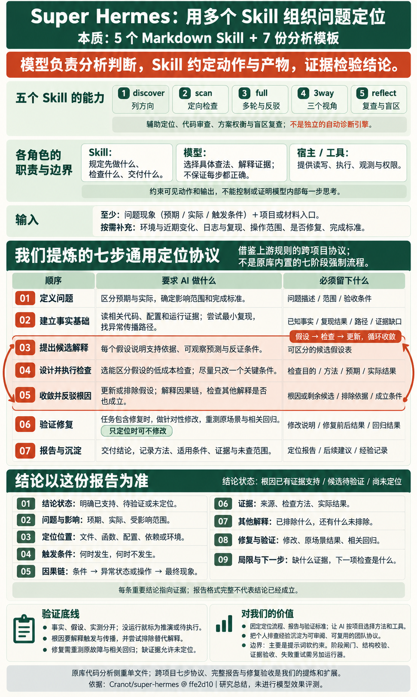

结合当前问题选具体查法
解释代码和数据、提出假设、选择检查、综合证据。能力与遵循程度会影响效果。
△ AN ANALYSIS FIELD GUIDE
Super Hermes 把排查与审查方法写成 5 个 Markdown Skill + 7 份分析模板，指导 AI 选角度、设计查法、追踪问题、反驳结论与记录盲区。内存增长、并发异常、失败恢复和方案审查，都可按需选择入口。
模型完成分析和判断；Skill 规定可见动作与产物；证据检验结论。

READ THIS FIRST / 我们的理解摘要
.prism-history.md 保存侧重、遗漏和建议。查看模块与原文 →判断与具体查法由模型完成；Skill 组织可见动作，证据检验结论。网页保存研究材料与教学案例，没有在线模型接口；内存和并发复现支持具体缺陷机制，不代表已评测 Skill 的检出效果。
OUR UNDERSTANDING / 从规则到通用定位协议
我们的核心理解：这个库的价值，是把问题定位与审查的经验，整理成多个可复用 Skill。它没有替模型完成推理，而是约定“先检查什么、从哪些角度查、每步留下什么、怎样复查”。具体查法与判断仍由模型完成，正确性要靠材料和执行证据检验。
解释代码和数据、提出假设、选择检查、综合证据。能力与遵循程度会影响效果。
用自然语言规定顺序、检查角度、反驳要求、报告字段和盲区记录；不能锁定模型内部思维。
宿主提供权限和工具；日志、复现、测量与回归结果用于检验候选原因和修复效果。
原库能力与我们的提炼要分清：上游提供 5 个入口及其各自流程；下面七步、完整报告和修复验收，是我们基于它整理的通用协议。它们不是原库内置的七阶段执行器，也不要求把所有 Skill 顺序运行一遍。原库代码分析侧重单文件，跨项目使用需补充上下文和工具适配。
最小输入：问题现象（预期与实际、触发条件）＋项目或材料入口。
按需补充：环境、最近变更、日志、最小复现、允许操作范围、是否需要修复、完成标准。缺少的材料先记为缺口。
| 顺序与输入 | 怎样指导 AI | 本步产物与约束 |
|---|---|---|
| 01定义问题现象、预期、材料入口 | 写明预期与实际、触发条件、影响范围、完成标准，确认任务是否包含修复。 | 问题定义＋范围＋验收条件 尚不明确的条件列为待确认。 |
| 02建立事实基础问题定义与相关材料 | 读取代码、配置和运行证据，建立最小复现，追踪现象沿哪些路径传播。 | 事实＋复现＋路径＋缺口 标明来源；代码推演与实际运行分开。 |
| 03提出候选解释事实、可疑路径与缺口 | 提出合理假设，逐项写出支持依据、可检验预测和推翻条件。 | 可区分、可反驳的候选 候选不能直接当成已证实根因。 |
| 04设计并执行检查候选及其预测 | 优先选择低成本、能区分候选的检查；每次改变一个主要条件，比较预期与实际。 | 目的＋方法＋预期＋实际 如实报告执行；未运行标为推演或待验证。 |
| 05收敛并反驳根因检查结果与候选 | 按证据更新、排除候选，建立因果链；主动寻找反例、替代解释和成立边界。 | 根因或剩余候选＋排除依据＋成立条件 证据不足返回第 3–4 步，不强行结案。 |
| 06验证修复定位结果、范围与验收条件 | 任务包含修复时，针对原因做修改，在原触发场景比较前后结果，再检查相关回归。 | 修改＋前后对照＋回归结果 只定位时可不修改；未验证不得声称已修复。 |
| 07报告与沉淀调查记录与修复状态 | 按下方九项报告交付；保存可复用查法、适用条件、盲区和下次补查方向。 | 结论报告＋下一步＋可复用经验 完整故障档案需要另行存储。 |
循环关系：③ 候选 → ④ 检查 → ⑤ 收敛 / 反驳 → 返回③或④。七步规定调查主线，具体检查内容随问题、证据和项目变化。
DELIVERABLE / 以这份结论报告为准
先明确结论状态，再说明依据；不能把“走完流程”当成“已经定位”。
不适用或未执行的字段须如实说明。根因应解释触发条件与传播过程；修复结论需要原场景和相关回归证据。
把个人排查经验变成团队可复用的输入、动作、产物与验收约定。内存、并发、接口错误、性能退化或配置故障共用主线，按项目替换领域清单、材料入口和检查工具。
原库主要用提示词引导，不能保证每步都执行或判断都正确。需要更强约束时，另加阶段产物校验、工具证据要求、权限控制和失败回退；这些工程扩展未在原库完整实现。
THE UNDERSTANDING MAP
本质是用多个分析 Skill 组织问题定位。图中汇总原库的五个入口、七份视角，以及我们提炼的七步协议和九项结论报告；重点展示每步如何指导 AI、留下什么、如何验证，以及对我们的复用价值。
THE RULEBOOK / 逐条看它怎样指导 AI
作者把观察对象、检查动作、执行顺序和交付要求写成 Skill 与模板，AI 再结合当前材料生成具体查法。这里逐份核对 5 个 Skill + 7 份固定模板，归纳为 69 条；数量与分组由本研究整理，README 另补运行说明。
上面的七步协议是我们的整合；下面保留上游逐条依据。各入口职责不同：discover 只列方向，full 要求额外对抗复查，reflect 保存盲区。条数不等于强制执行顺序。
点击一条查看：原文动作的中文概括 → 如何指导 AI → 应留下的产物 → 应用示例。作用、示例与使用边界为研究者解读，未评测模型增益；原文按钮会定位并高亮依据。
当前筛选没有匹配规则。
下表映射到固定上游版本 ffe2d10。相同动作合并到通用规则，一条规则可引用多份原文；条数不等于强制步骤数。这是人工内容核对，不是自动语义覆盖率评分。评分、模型推荐等元数据单列到 M04。
| 原始文档 | 对应规则 | 原文 |
|---|
HOW IT GUIDES / 跟着一个问题走
它沉淀的是检查动作、交付要求和分析盲区。核心做法是：先让 AI 公开一份针对当前问题的检查方法，再执行其中的构造、追踪与复查，留下可定位的发现。
规定先设计方法、再执行，必须构造场景、指出位置、交代盲区；full 另外要求反驳。
把“查内存”展开成分配、持有、退出和对照场景。它是当次输出，scan 不保证自动永久存档。
记录本次侧重、遗漏和建议；下次 scan 读取它，调整检查方法。完整故障案例需另行归档。
下面用内存案例走一遍我们的七步协议：scan 的方法设计、full 的反驳、reflect 的盲区记录可按需借鉴，运行检验另接工具。这是研究者编写的教学，不是原库内置流程或 Hermes 分析记录；同一主线也可用于并发、接口、配置与性能问题。
留下本次盲区 → 下次读取历史 → 生成新的检查方法。七份固定模板也可按需复用；这些要求通过自然语言指令引导模型，仓库没有逐阶段校验器保证执行。
A CONCRETE EXAMPLE / 内存问题
它可以用来辅助定位内存持续增长的代码原因。例如：每次请求都往缓存写入大对象，缓存却没有容量上限。关键是追到“对象在哪里创建、被谁持有、什么时候退出”，再用运行数据验证。
下面用本研究自建案例解释流程：代码与内存数据已经运行验证，尚未验证 Super Hermes 的检出效果。
请求越多，内存越高；附缓存代码、对象大小与采样数据。
检查分配、持有、淘汰路径；列出位置、条件与待验证项。
请求 key 持续增加，cache 强引用所有响应；执行 GC 仍不能释放。
同样请求量，对比内存曲线、缓存条目与分配行。
18 def get(self, key):19 if key not in self.cache:20 self.cache[key] = make_response()21 return self.cache[key]bytearray(PAYLOAD_BYTES) 每次创建 64 KiB 响应。self.cache[key] 保留响应。对象仍可访问，所以 GC 不会替你清掉缓存。持有链 长期存活的 cache → 请求 key → 64 KiB 响应
独立进程运行 · 800 个不同 key · 每个响应 64 KiB
800 条，持续增加
32 条，保持上限
度量：Python 跟踪的存活内存增量，非进程总内存。每次采样前执行 GC；清空缓存后，两组响应对象在第 11 行的分配增量均归零。
能力依据：上游性能模板要求检查分配、缓存行为与具体成本；scan 支持指定检查重点。内存生命周期是我们据此展开的应用场景。
演示来源：问题代码、定位说明、LRU 修改与测量脚本均由本研究编写；本轮没有运行 Hermes 或调用模型。实测确认了这段代码的无界持有问题和限制缓存的效果，没有测得该 Skill 的检出率或相对普通 AI 的提升。
能力边界：这属于仍被引用的对象无限累积，常被称为逻辑内存泄漏。只看内存上涨不能确定泄漏；原生内存、堆转储与跨文件持有链可能还需要额外工具和上下文。当前库本身没有提供运行时内存探针。上图交互只查看已有采样记录。
本地复现：python projects/012-super-hermes/scripts/reproduce_memory.py。测量使用 Python 标准库 tracemalloc ↗，两组各在独立子进程执行。
分析 cache_fixture.py，重点检查内存是否会随请求持续增长。追踪对象的创建、长期持有与淘汰条件；列出可疑位置、成立条件、修复代价和需要采集的运行证据。证据不足时明确说明。
01 / USE CASES
先确定想检查什么，
再选择合适的分析方法。
准备修改一个重要文件，想找出普通阅读容易忽略的失败路径、并发冲突和隐藏假设。
单个代码文件 + 检查重点，例如线程安全。
问题位置、触发条件、严重程度、可修复性，以及尚未覆盖的角度。
建议从这里开始
可以这样提问
检查 circuit_breaker.py，重点关注线程安全：找出状态转换与锁之间的冲突，并列出触发条件。
/prism-scan analyze circuit_breaker.py focusing on thread safety示例提问。真实并发漏洞及本地复现见下方案例。
适合深入审查一个明确对象；当前上游明确限定代码分析为单文件。范围依据 ↗
02 / CAPABILITIES
Skill 是交给 AI 的工作指令。
选中一项，看看它如何组织分析。
03 / UNDER THE HOOD
规则进入模型的上下文，
引导它按指定方法检查材料。
把它拆开，真正可复用的是三类约束：执行顺序、交付要求、检查视角。下面是对五个 Skill 的归纳，各个 Skill 的原始流程并不完全相同。
作用：让分析有顺序、有中间产物，也允许推翻前面的判断。
流程依据 ↗作用：把“说得很深入”变成可以逐条核查的报告要求。
报告依据 ↗作用：明确观察对象、检查动作和产出，给多角度分析具体抓手。
视角依据 ↗阶段标题、角色、数量、输出字段和“必须执行”等指令负责引导模型；仓库没有逐阶段程序校验来保证遵守。复用时保留反例、复查和盲区说明，同时允许“证据不足”或“未发现必然冲突”，避免预设一定存在守恒律。
当前统一版本。上方逐步讲解；此处提供完整复用文本。它是我们的协议设计，没有安装为 Skill，也没有模型效果评测。
通用问题定位协议 · 本研究提炼版 日期：2026-10-22 参考：Cranot/super-hermes @ ffe2d10042041dcc23325f013e8b7e607e069952 【定位与边界】 Super Hermes 提供 5 个 Markdown 分析 Skill 和 7 份固定分析模板。 作者把通用检查动作、顺序、角度、报告要求和盲区记录写成自然语言指令。 模型根据材料选择具体查法、解释证据并作出判断；工具执行和权限由宿主提供。 Skill 约束可见动作和交付产物，不能读取或锁定模型的内部思维。 仅有提示词约定不能保证遵循，也不能保证结论正确。事实与运行结果用于检验判断。 以下七步、完整报告和修复验收是我们的通用协议，不是上游内置的七阶段执行器。 上游代码审查以单文件为主；跨项目使用需要补充项目上下文、工具与证据适配。 【输入】 最小输入：问题现象（预期与实际、触发条件）＋项目或材料入口。 按需补充：环境、最近变更、日志、最小复现、允许操作范围、是否需要修复、完成标准。 材料不足时先记录缺口；不得编造日志、运行结果或已有结论。 【七步流程】 1. 定义问题 输入：现象、预期、材料入口。 要求：说明预期与实际、触发条件、影响范围和完成标准；区分定位与修复任务。 产物：问题定义、调查范围、验收条件；不明确的条件列为待确认。 2. 建立事实基础 输入：问题定义与相关材料。 要求：读取相关代码、配置和运行证据；建立最小复现，追踪现象的传播路径。 产物：有来源的事实、复现步骤、相关路径与证据缺口。 要求：代码推演与实际运行分开记录；无法复现可以继续，但必须标明。 3. 提出候选解释 输入：已知事实、可疑路径与缺口。 要求：提出合理的候选解释；逐项写出支持依据、可检验预测和推翻条件。 产物：可被区分、可被反驳的假设列表；不得把候选直接写成已证实根因。 4. 设计并执行检查 输入：候选解释及其预测。 要求：优先选择低成本、能区分候选的检查；每次改变一个主要条件。 产物：检查目的、方法、预期、实际结果与执行状态。 要求：只能如实报告执行；未运行必须标为推演或待验证。 5. 收敛并反驳根因 输入：检查结果与候选解释。 要求：按证据更新或排除候选，形成条件→异常状态或动作→结果的因果链。 要求：主动检查替代解释、反例与适用边界；证据不足时返回第 3–4 步。 产物：有证据支持的根因，或仍待验证的候选；附排除依据与成立条件。 第 3–5 步可以循环，不得为了走完流程强行得出唯一根因。 6. 验证修复（仅任务包含修复时） 输入：定位结果、修复范围与验收条件。 要求：针对原因做修改；在原触发场景下比较前后结果，并检查相关回归。 产物：修改内容、前后对照、回归结果与未覆盖范围。 要求：只定位时可不修改；没有完成验证不得声明“已修复”。 7. 报告与沉淀 输入：调查记录、证据、候选与修复状态。 要求：按下列九项报告交付；保存可复用查法、适用条件、盲区和后续检查方向。 产物：结论报告＋下一步＋可复用经验；完整故障档案需要另行存储。 【结论报告：九项字段】 1. 结论状态：根因已有证据支持 / 候选待验证 / 尚未定位。 2. 问题与影响：预期、实际、影响范围。 3. 定位位置：文件、函数、配置、依赖或环境。 4. 触发条件：什么时候发生，什么时候不发生。 5. 因果链：条件 → 异常状态或动作 → 最终结果。 6. 证据：来源、检查方法、实际结果；区分事实、推演和待验证内容。 7. 其他解释：已排除与尚未排除的解释及其依据。 8. 修复与验证：是否修复、修改内容、原场景前后对照、相关回归。 9. 局限与下一步：缺失证据、未覆盖范围、下一个最有效的检查。 不适用或未执行的字段须如实说明；不得用空白冒充完成。 【验证要求】 - 事实、假设、代码推演和实际执行分别标记，并保留来源与复现方式。 - 根因应能解释触发条件和传播过程，还需检查有竞争力的替代解释。 - 没有实际运行，就不能声称运行验证通过。 - 任务包含修复时，原场景验证和相关回归都应留下结果；缺项列为未完成。 - 证据不足时允许交付候选待验证或尚未定位，并指出下一步。 【从上游复用什么】 scan：先生成针对材料的检查方法，再执行，交代问题位置与盲区。 full：自行规划 2–4 轮，并额外对抗复查，修正或撤回发现。 3way：结构（WHERE）、长期变化（WHEN）、目标冲突（WHY）三个视角。 discover：只提出约 10–20 个调查方向，不代替深入分析。 reflect：复查侧重与遗漏，追加 .prism-history.md，供后续补查。 七份模板：错误韧性、结构权衡、性能成本、接口与实际行为、信息损失、假设反转、长期演化。 本协议按问题按需选用这些能力，不要求把 5 个 Skill 或 7 份模板全部运行一遍。 【对我们的价值】 把排查经验变成可复用的输入、动作、产物与验收约定，减少漏查与无法复核的结论。 不同项目保留通用流程，替换领域检查清单、材料入口和工具适配。 需要更强执行约束时，另行实现阶段产物校验、工具证据要求、权限控制和失败回退。 这些工程扩展在原库中没有完整实现；本研究未运行 Hermes 或评测模型增益。
交互使用预设文字解释机制，不会调用模型。多专家是提示词中的角色安排；历史文件是补充上下文，不会更新模型权重。
04 / A REPRODUCIBLE CASE
熔断器像一道保护闸：服务连续失败后暂停请求，等 30 秒再放少量请求试探。上游教学样例把“等待是否结束”的判断和“打开试探通道”的写入分开，线程可能在两者之间插入新失败。
43 @property44 def state(self) -> State:45 if self._state == State.OPEN:46 if self._last_failure_time and (47 time.time() - self._last_failure_time >= self.recovery_timeout48 ):49 self._state = State.HALF_OPEN50 self._half_open_calls = 051 return self._state先判断，再写状态；这段转换没有用同一把锁保护。
距离上次失败已过去 60 秒。
冷却时间重置，应再等 30 秒。
未重新检查失败时间，写入 HALF_OPEN。
新失败后不足 30 秒就进入半开状态。
预设顺序演示，复现脚本在本机执行。查看真实执行记录 ↗
上游保存的 AI 报告指出了无锁状态转换。示例代码注明“故意包含设计缺陷”。
05 / ROOM TO EXTEND
沿着“规则、流程、工具”扩展，
先分清哪些已经能用。
复用现有 Skill 的参数与模板。
需要编辑提示词，并测试新规则的效果。
增加运行器、数据结构与验证工具。
先做“单文件审查记录”：固定版本 → 选择视角 → 保存报告 → 跑复现 → 留下未验证项。之后再考虑自动化。
06 / GET STARTED
完整 Skill 流程需要 Hermes Agent ↗、已配置的模型，以及可读取的本地材料。
本展示页只提供阅读、交互解释和资料下载。先装最常用的定向扫描；它附带 7 份固定模板。
hermes skills install Cranot/super-hermes/skills/prism-scan在 Hermes 对话中输入，例如：
/prism-scan analyze circuit_breaker.py focusing on thread safety完整 Skill 是为 Hermes 编写的。固定模板是独立提示词，可交给支持系统提示词的模型工具；读文件、写历史和多轮编排需要宿主工具支持。迁移完整 Skill 时应检查工具名与加载方式。
例如上游文档中的 Claude CLI 用法：
claude -p --system-prompt-file l12.md --tools "" < your_code.py先从本页模板库下载 l12.md，并准备 your_code.py；该命令没有在本次研究中实测。
01分析结果需要证据“守恒律”“不可能三角”是模型提出的判断，需要验证假设和推导；格式像公式不代表已被证明。
02深度评分来自作者实验上游没有标准化外部基准；报告更长、列出更多问题，不能直接说明正确率更高。
03盲区记录不保证改进历史只是追加文本，尚无去重、语义检索及后续质量提升的验证机制。
原始资料包含 18 份固定版本文件与许可证。命令与机制来自上游；场景提问与扩展方案由本研究整理；线程演示使用预设数据。